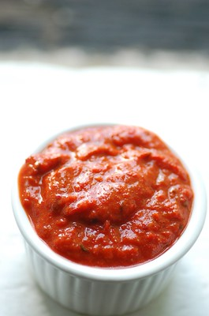

Home
Harissa chicken with rice and avocado

✨ Description
Harissa chicken (extra mild) with rice and avocado. Makes 2 servings.
✨ Ingredients
- 1 cup of white rice, e.g. Basmati
- 250g chicken breast
- 1 tsp turmeric
- 3 tsp harissa paste
- salt to taste
- EVOO (extra virgin olive oil)
- 1 avocado (make sure it's perfecly ripe)
- (optional) bread (to clean the leftover sauce off the plate)
✨ Steps
- Cut the chicken in cubes and season it with harissa, salt and EVOO.
- Bring water to a boil, add salt, turmeric and a drizzle of EVOO and the rice.
- In a pan, cook the chicken with a tbsp of EVOO.
- Once the rice and chicken are cooked, serve with half an avocado (don't forget to add salt and EVOO to the avocado as well).